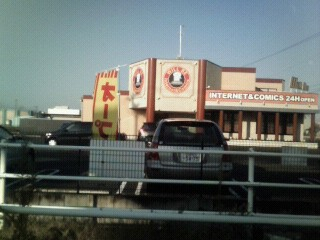

Free talk 雑談。
（298）ネット喫茶
先日、某所を通りかかった。すると24時間オープンのネット and マンガ喫茶が開店していた。

この店、以前は中華料理店。３年ほど前、大々的にオープンした。建物も、中の造作も凝っていた。50台ほどの駐車場も完備。料理人もわざわざ中国大陸から呼び寄せたというので、開店当初は押すな押すなの大にぎわい。
σ(-_-)もさっそく行ってみたが、注文して出てきたのはまずさ爆発の料理ばかり（詳しい経緯はココ）。
そのとき（これじゃあ、１年も持たないのでは....）と思ったが、１，２年経っても営業している。（あの料理で.....？）と とても不思議だったが、今回 ネット喫茶に衣替えしてたのを見て大いに納得。
それにしても 前の中華料理店の経営者、ナントカ厨師と雇用契約をする前に、自分の舌で確認しなかったのかしらん....